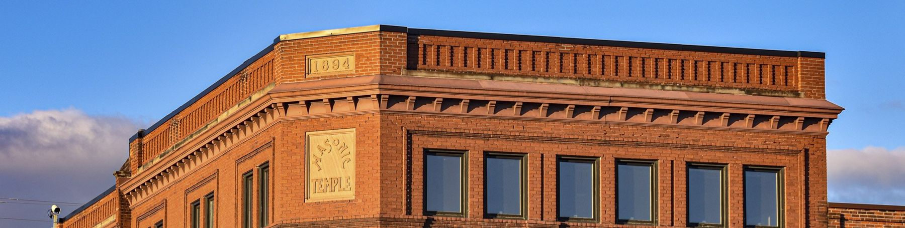
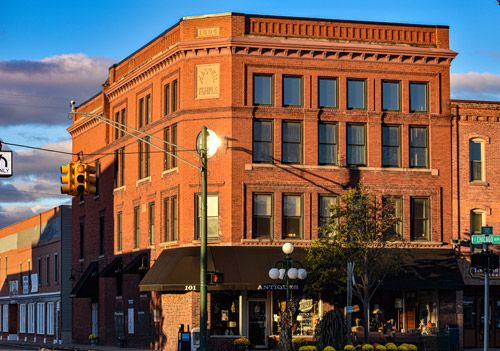

Your DDA at work
Investing in the heart of the city
The Tecumseh Downtown Development Authority has worked on the economic vitality and growth of Downtown Tecumseh since 1981. Here is what we are working on, why it matters, and what comes next.
Projects & plans
What's happening now
A new downtown website
The DDA issued a request for proposals on September 14, 2026. Proposals are due October 19 at 3 PM, award is anticipated November 12, and launch is planned for May 2027.
Art Trail Tecumseh
A free outdoor sculpture exhibit with new work installed each spring, funded through the DDA, the Sage Foundation and the Michigan Arts and Culture Council.
Downtown Streetscape Master Plan
Implementation updates will be posted here by DDA staff as the plan moves forward.
The Market on Evans
The permanent home of Tecumseh's Farmers Market, in the refurbished market building at 213 N. Evans Street. Also available to rent for events.
Tecumseh Social District
Part of the Michigan Social District program. The commons area closes at 8:00 PM Sunday through Thursday and 10:00 PM Friday and Saturday.
Tecumseh Historical Mural
Painted by the 2016 Tecumseh High School art class and funded by the DDA and the Sage Foundation.
For businesses & investors
Downtown Tecumseh is a celebration of the entrepreneur
Whether you already have a storefront on Chicago Boulevard or you are looking for one, start with the people who can help.
Board, meetings & contact
Get in touch
Tecumseh, MI 49286
